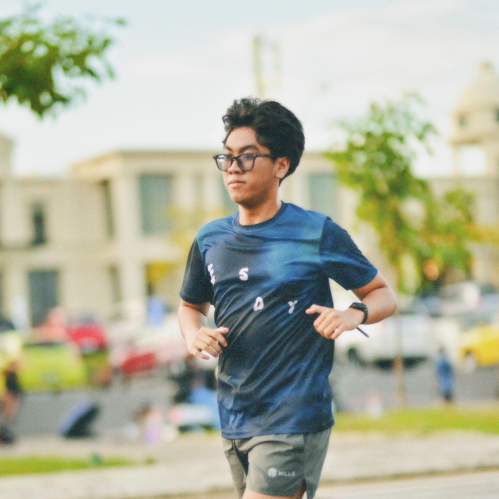
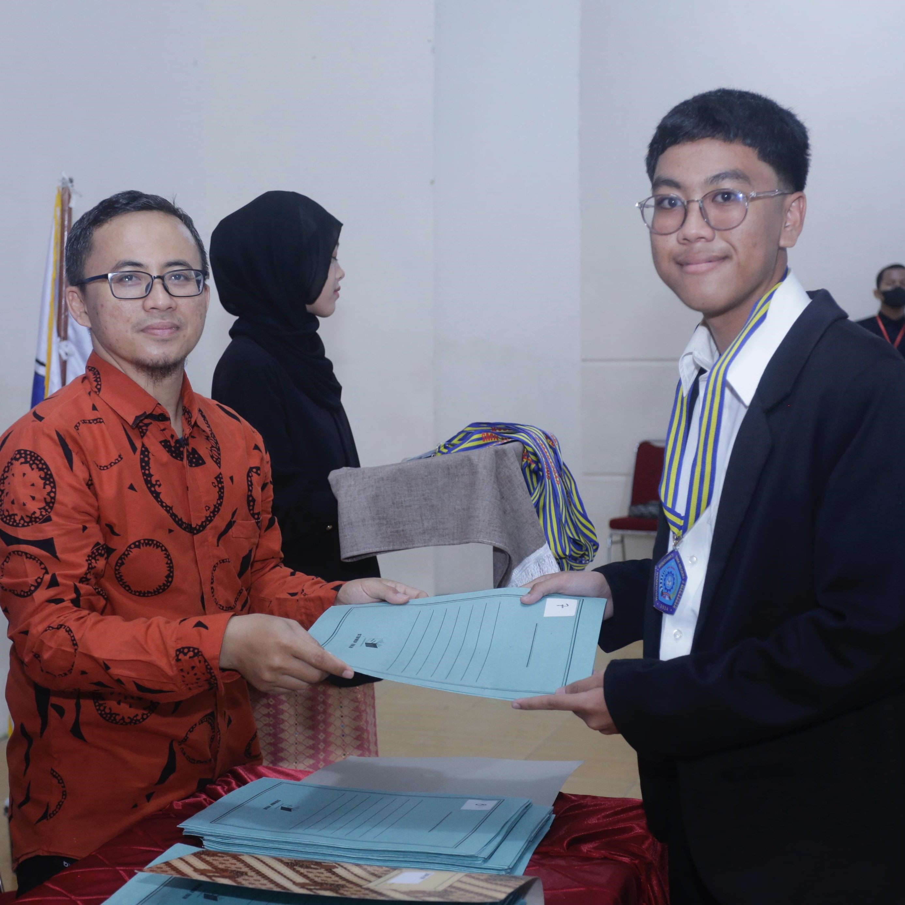
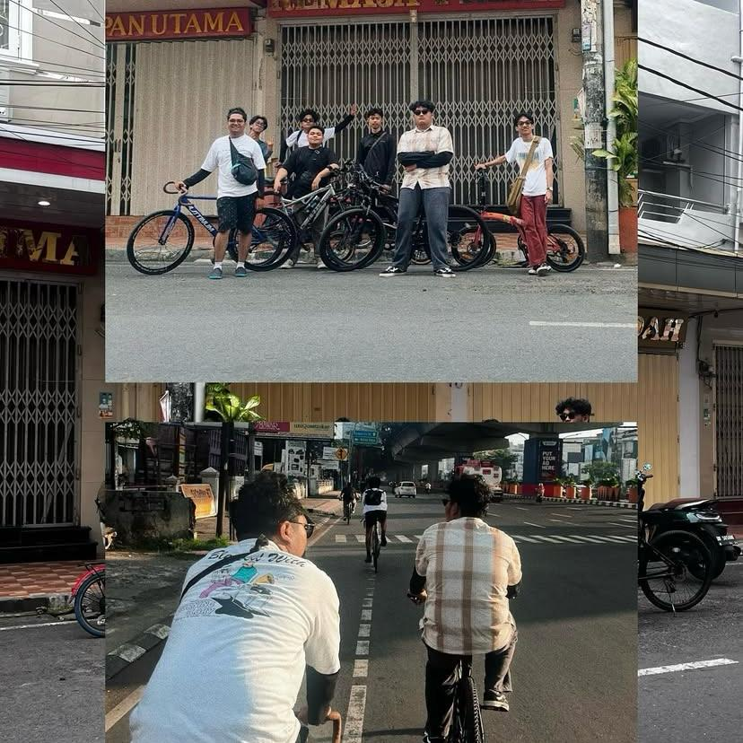

About me

Biografi
Saya Asyraf Pramudya Azhar AB, Lahir pada 14 Agustus 2006 Di Makassar.
Saya adalah anak 3 dari 4 bersaudara, saya berdomisili Makassar tepatnya Jl. Tamalate 1 Kecamatan Rappocini

Hobi
Hobi saya ialah berlari, bermain game, design UI/UX, dan juga mendengarkan musik.

Jenjang Pendidikan
Saya merupakan alumni dari SMKN 2 Makassar Jurusan RPL (Rekayasa Perangkat Lunak) dan saya lulus pada tahun 2024.
Saya juga merupakan alumni dari MTsN 1 Makassar dan lulus pada tahun 2021

Komunitas
Saya juga memiliki komunitas sepeda yaitu @ada.bikenya yang beranggotakan 8 orang kami selalu melakukan sepeda rutin setiap minggu dengan rute bervariatif sembari membuka ajakan gowes bersama.